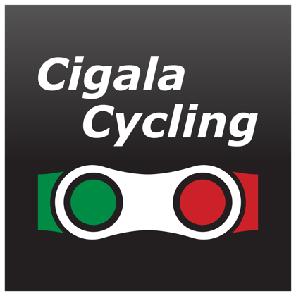

Cigala Cycling Coaching
Stretches & core

Stretching & mobilityStrength & core
Stretches
1
On your back, flex your right leg and extend your left leg. With the left ankle make 20 clockwise circles. Repeat with the right ankle.
2
On your back, put your right hand on your stomach and your left hand on your chest. Take 20 deep, slow diaphragmatic breaths: when you breathe in, inflate your stomach.
3
On your back, flex your right leg as much as you can and bring it to the left, while your body and head rotate to the right. Hold for 30 seconds and reverse.
4
On your back, cross and flex both legs. Keep your hands under your knees, hold the position for 1 minute and reverse.
Stretches & CoreCigala Cycling Coaching
5
From a face-down position, sit on your heels and stretch your arms out forward. 1 minute.
6+7
From the four-point position, do the “cat” movement, repeating 15 times.
8
Sitting, extend your legs straight and together. Flex your body forward as much as you can and hold for 45 seconds.
9
Sitting with your right leg extended and your left leg flexed, leaning backward, reach to the ankle and hold the position for 45 seconds, then reverse.
10
Sitting with your legs crossed, flex your body forward as much as you can for 1 minute.
Stretches & CoreCigala Cycling Coaching
11
From the four-point position, bring your left leg to the height of your left arm and extend your right leg for 1 minute, then reverse.
12
Standing, flex your left leg for 30 seconds, then reverse.
13
Standing, bring your left arm behind your neck and pull with your right hand. Hold for 30 seconds and reverse.
14
Standing, bring your left arm behind your neck and pull with your right hand. Hold for 30 seconds and reverse.
15
Standing with your legs extended, touch the floor with your hands without flexing your knees.
Stretches & CoreCigala Cycling Coaching
16
As the exercise before, but open your legs as much as you can. Hold for 30 seconds.
17
Sitting, flex your legs and try to keep your feet as close as possible to your body. Move your legs like wings, 50 times.
Core & strength
18
On your back, cross your feet and do abs exercises, coming halfway up without touching your legs. 3 series of 50 each.
19
On your back, bring your right foot onto your left knee. Do abs exercises touching your right knee with your left elbow. 50 times on both sides.
20
Hold the plank position for 1 minute, keeping your body straight and contracting your abs. Repeat 3 times.
Stretches & CoreCigala Cycling Coaching
21
As the exercise before, but hold the position on your hands instead of your elbows. Hold for 1 minute contracting your abs. Repeat 2 times.
22
In a four-point position, raise your right arm and left leg together and hold them in position for 30 seconds. Repeat 5 times.
23
From a face-down position, cross your legs and extend your body upwards. Do 3 series of 10 each (front, right, left).
24
On your back, bring your legs straight up in front of you. Move your legs together to the right, keeping them straight and contracting your abs, until they almost touch the floor. Continue to the left side. Do 2 series of 20 each.
25
On your back with your arms along your body, raise your shoulders from the floor contracting your abs and hold the position for 30 seconds. Repeat 3 times.
Stretches & CoreCigala Cycling Coaching
26
From a face-down position, extend your arms in front of you. Raise your shoulders from the floor, going up and down with your arms straight. Do 2 series of 30 seconds each.
27
Do 30 push-ups. On the last one, hold the position without touching the floor with your body.
28
Standing, flex your knees and hold the position as long as you can. Recover and repeat.
29
Standing, go down flexing your knees and come back up (squat). Do 2 series of 30 squats each. In the last series, jump on the way up.
30
As the exercise before, but squat bending to the side: first to the right, then to the left. Do 2 series of squats on each side.
Stretches & CoreCigala Cycling Coaching
31
Standing, put one foot behind the other and rise up onto your toes, then come back down slowly. Do 2 series of 15 for each foot (better done on the stairs).
32
Hold the position for 1 minute on both sides, contracting your abs. Repeat moving just the body, or better the hips, up and down.
33
On your back, contracting your abs, move your legs slowly as if you were pedalling your bike. Do it for 1 minute.
34
With the bench behind you, standing, flex your knee and keep the left leg straight. Flex until almost sitting on the bench. Come back to the starting position and repeat 15 times for each leg.
35
With the bench in front of you, do a strong jump landing on one foot, bringing the knee of the other leg to your stomach. Do 20 times and repeat with the other leg.
Stretches & CoreCigala Cycling Coaching
36
With the bench in front of you, do a strong jump landing with both feet. Repeat 30 times.
37
From this position, raise your right leg and move your hips up and down. Do 20 times for each leg.

Stretches & core made by
Cigala Cycling